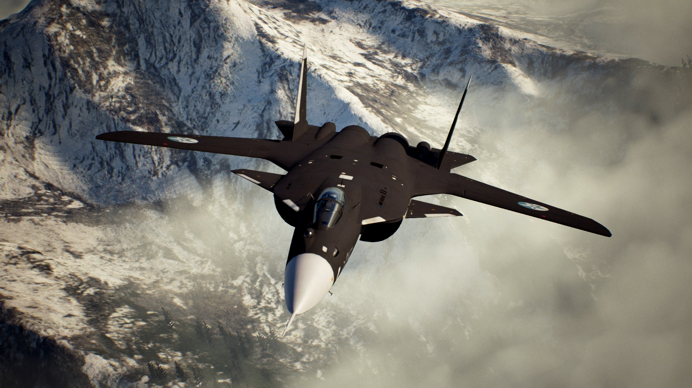

Esta web va a tratar sobre el maravilloso mundo de la aeronaútica y en concreto sobre un avión de combate que ya tiene un tiempo, pero que no deja de ser una auténtica bestia. El avión en cuestión es el Sukhoi Su-47 que te presento a continuación
Su moderna tecnología de vuelo y la función como banco de pruebas de nuevas tecnologías experimentales, para recolectar información sobre el comportamiento de su avanzado diseño futurista, está siendo aplicado en el nuevo caza supersónico de diseño furtivo PAK-FA de Rusia, que si se aprobó su fabricación en serie como un avión caza de primera línea de batalla, para enfrentar en combate aéreo contra otros aviones caza de Quinta generación de cazas de reacción y en el nuevo caza Chengdu J-20 totalmente fabricado en China, pero con las alas principales en forma romboidal.
Su construcción en serie ha sido aplazada por ahora, para favorecer la construcción del nuevo caza PAK-FA, que tiene ocupadas todas las líneas de ensamblaje y a los técnicos rusos, para la rápida producción en serie de este moderno avión de "Quinta generación", y el nuevo caza Su-35 de generación 4.5 o generación 4++, de producción en serie para equipar a la Fuerza Aérea de Rusia y su exportación a otros países, gracias a la información recolectada por las pruebas de vuelo del Su-47; pero es posible, que se pueda construir en serie en el futuro como un nuevo tipo de caza naval, con alas de geometría variable por su mejor performance du vuelo a baja altitud y velocidad, y como un avión de combate no tripulado de sexta generación para volar junto al caza PAK-FA.
Es muy posible que Rusia pueda optar por el diseño del Su-47 Berkut (Firkin, según la clasificación de la OTAN), desarrollado en la oficina de diseño Sukhoi y fabricar un nuevo avión naval en el futuro, incluso un nuevo avión no tripulado de sexta generación para misiones de combate naval.
El principal rasgo característico de este caza son las alas en flecha inversa, que le permiten tener una alta maniobrabilidad a baja velocidad y altitud, le permite superar a otros aviones de combate y atacar a objetivos enemigos con vuelos rasantes sobre el mar, para lanzar misiles navales en misiones similares al caza Dassault-Breguet Super Étendard en la Guerra de Malvinas.